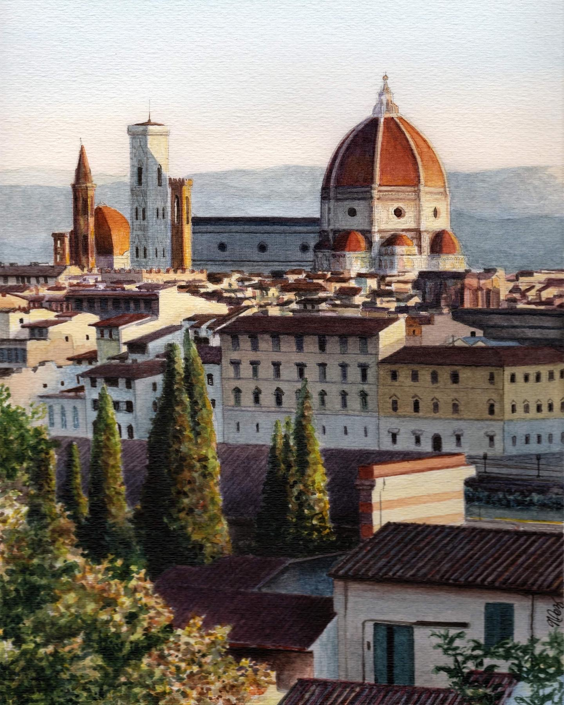
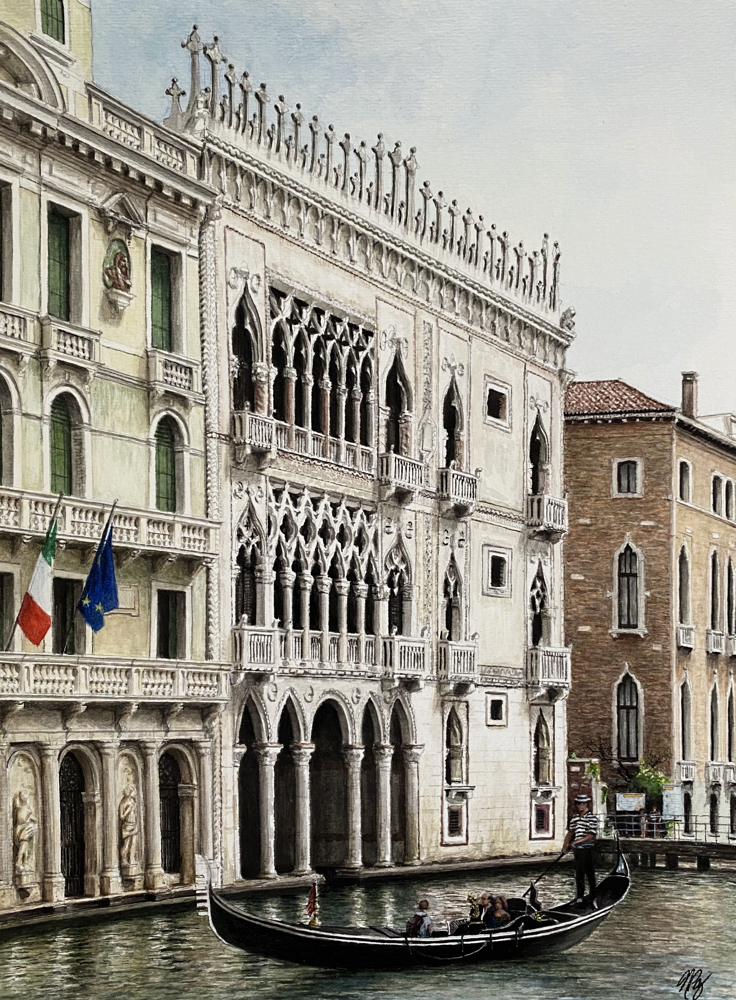

01
La Historia de las Familias Larrabure, Unanue, Correa y Veyán
Historical research · Published book · Additionally, publishing historical work El Querido Caballero
2022-2026
Strategy · Research · Design
Welcome to my website.
Here I share projects, art, and articles.
Sr. Strategy Manager at Syniverse. Public Policy Master’s and Bachelor’s degrees from Stanford University. Historical researcher and published author. I also do some art and architectural design.
Historical research · Published book · Additionally, publishing historical work El Querido Caballero
2022-2026


Selected works
2018–2024
Get in touch